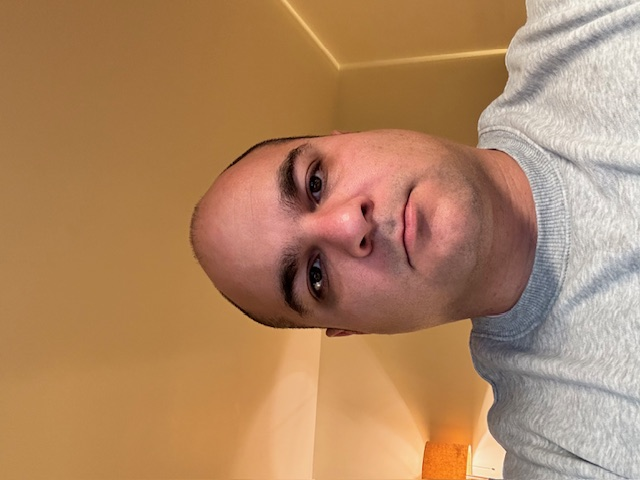

yevgeniymazur@gmail.com
I’m Yevgeniy, an Application Development student building skills in HTML, CSS, JavaScript, Python, and SQL. I enjoy solving practical problems with technology and building clean, usable interfaces.
I’m focused on strengthening my fundamentals and building a portfolio I can show to employers. I’m especially interested in IT support, technical operations, and entry-level developer roles. I have built a small home lab to test networking equipment, a nas, and a Minecraft server for my son and I to play in.
This quarter I’m focusing on clean project structure, readable code, and completing projects with my teams. I want find an efective way to manage my time with teamates in a way that will boost support and colaberation.